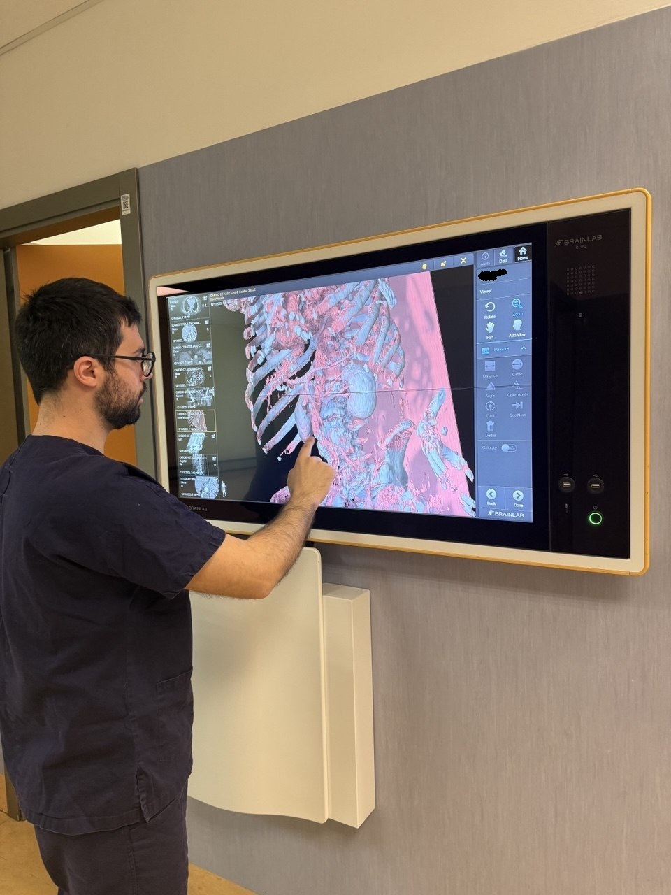
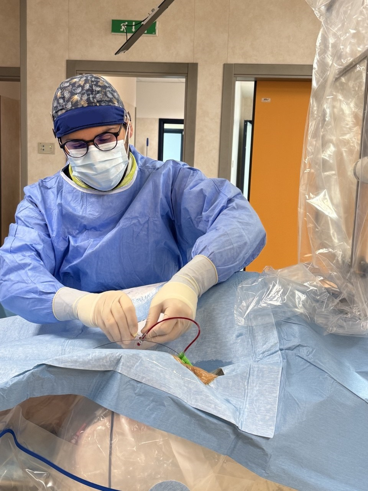

Sono un medico-chirurgo, specialista in malattie dell’apparato cardiovascolare, attualmente in servizio come dirigente medico
cardiologo presso il Policlinico dell’Azienda Ospedaliero-Universitaria Renato Dulbecco di Catanzaro.
Dopo la maturità conseguita al Liceo Classico Bernardino Telesio di Cosenza , inizia il mio percorso di formazione medica presso l’Università Magna Graecia di Catanzaro, dove conseguo la Laurea Magistrale in Medicina e Chirurgia con tesi sperimentale in Cardiologia, nello specifico sulla trombosi coronarica in corso di infarto miocardico acuto (Relatore Prof. Ciro Indolfi). Successivamente, nello stesso Ateneo, conseguo il titolo di Specialista in Malattie dell’Apparato Cardiovascolare (Relatore Prof. Salvatore De Rosa) con tesi sperimentale sull’angioplastica coronarica con pallone medicato per il trattamento della cardiopatia
ischemica, dopo aver assiduamente frequentato la sala di emodinamica durante il mio percorso formativo.

Conseguito il titolo di specialista, risulto vincitore di concorso pubblico per ricoprire il ruolo di dirigente medico cardiologo presso l’Unità Operativa di Cardiologia del Presidio Ospedaliero di Lamezia Terme, diretta dal Dott. Roberto Ceravolo.
In seguito, sulla scorta del mio percorso ad orientamento interventistico, dopo essere risultato vincitore di avviso pubblico per cardiologo con competenze specifiche in emodinamica, torno al Policlinico di Catanzaro, nell’U.O. di Cardiologia diretta dal Prof. Daniele Torella, dove attualmente ricopro il ruolo di cardiologo interventista occupandomi quotidianamente della diagnosi e del trattamento della cardiopatia ischemica acuta e cronica, con l’obiettivo di offrire ai pazienti cure aggiornate, personalizzate e basate sulle più recenti evidenze scientifiche.

La mia missione è la cura del paziente partendo dall’ascolto, integrando nel percorso di cura le esigenze del singolo paziente: la comunicazione è il cardine del rapporto di fiducia instaurato tra cardiologo e paziente e
pertanto ritengo che non possa esserci terapia efficace senza una comunicazione efficace.
In qualità di medico a me spetta il dovere della cura, scegliendo il trattamento adeguato in base alle evidenze scientifiche e alla pratica clinico-assistenziale migliore, ma la salute appartiene al paziente.
Egli è il primo protagonista della propria salute: il mio ruolo è quello di accompagnarlo con competenza e chiarezza nelle scelte più appropriate, rendendolo parte integrante del processo decisionale tramite una comunicazione costante volta a fornirgli tutti gli strumenti necessari per l’esercizio consapevole del diritto alla salute.
Il segreto della cura del paziente, è averne cura.
Francis Peabody